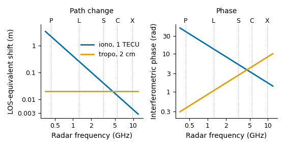

| SAR Concepts: Atmospheric and Ionospheric Phase | |
On its way to the ground and back, the radar signal is slowed by the troposphere and advanced by the ionosphere. Whatever changes between the two acquisition dates ends up in the interferogram as phase that looks exactly like ground motion. In most deformation studies the atmosphere is the largest error source: centimetres for the troposphere, and decimetres to metres for the ionosphere at L-band.
The tropospheric delay has two parts. The hydrostatic (dry) part is about 2.3 m at zenith. It depends on surface pressure and varies smoothly. The wet part comes from water vapour. It is smaller (from near zero up to a few decimetres at zenith) but varies strongly in space and time. Only differences matter: between the two dates, and between one pixel and another.
The interferometric phase picks up the difference in one-way slant delay between the two dates, δL = Lsec − Lref:
φtropo = (4π / λ) · δL
The troposphere is non-dispersive at radar frequencies. The delay in centimetres is the same at every frequency, so the same delay gives about twice as many fringes at X-band as at C-band. Two mechanisms create δL:
Typical differential delays are 1 to 3 cm, and in humid or high-relief areas they can exceed 10 cm.
No single method is best everywhere. When you can, check against GNSS.
The ionosphere is a plasma, and its effect is dispersive. It advances the carrier phase by an amount proportional to the total electron content (TEC) along the path and inversely proportional to the frequency f. The ionospheric path change is negative (a phase advance). As a path change and as interferometric phase:
δLiono = −K · ΔTEC / f2
φiono = −4πK · ΔTEC / (c f)
Here K = 40.28 m3s−2, c is the speed of light, and ΔTEC = TECsec − TECref is the change in slant TEC between the dates, in electrons/m² (1 TECU = 1016 el/m²). With SNAP's convention, extra tropospheric delay on the Secondary date looks like motion away from the satellite, and extra TEC looks like motion towards it (see phase to displacement). The table gives magnitudes for a differential 1 TECU, which is a modest amount.
| Band | Example | LOS-equivalent shift | Phase |
|---|---|---|---|
| X, 9.65 GHz | TerraSAR-X | 0.4 cm | 1.7 rad |
| C, 5.405 GHz | Sentinel-1 | 1.4 cm | 3.1 rad |
| S, 3.2 GHz | NISAR | 3.9 cm | 5.3 rad |
| L, 1.26 GHz | ALOS-2, NISAR | 25 cm | 13 rad |
| P, 435 MHz | BIOMASS | 2.1 m | 39 rad |

Figure 1. Left: LOS-equivalent path change for a differential 1 TECU of ionosphere (proportional to 1/f²) and for a 2 cm tropospheric delay (independent of frequency). Right: the same expressed as interferometric phase. The ionospheric phase falls as 1/f; the tropospheric phase grows with f.
Ionospheric effects are strongest at high latitudes (auroral activity), near the geomagnetic equator (evening irregularities) and around solar maximum. At L- and P-band they also cause azimuth streaks and Faraday rotation. At C-band they are usually smaller than the troposphere, but they can still add long-wavelength ramps across a 250 km Sentinel-1 scene. These ramps matter for slow, large-scale signals such as interseismic strain.
The ionospheric phase scales as 1/f, and everything else (geometry, deformation, troposphere) scales as f. The range bandwidth is therefore cut into a low and a high sub-band (centre frequencies fL, fH), and an interferogram is made and unwrapped for each. The ionospheric phase at the full-band centre frequency f0 is then
φiono = fLfH / [f0(fH2 − fL2)] · (φLfH − φHfL)
The sub-bands are only a small fraction of the carrier apart, so noise in φL and φH is strongly amplified. Because the ionosphere is smooth, the estimate can be filtered heavily. The method works best where the bandwidth is large relative to the carrier frequency, as at L-band. At C-band it needs high coherence and strong filtering (see Fattahi et al., 2017, for a time-series extension).
EmpiricalTropoCorrection) fits phase against DEM
height on a sample grid (sampleStride 20 px) using pixels with coherence ≥ 0.3 and height
> 1 m. The model is linear (default) or quadratic. It fits and subtracts each band
separately. It processes every band with unit phase or
abs_phase and keeps band names and units, so run it on unwrapped phase only. For the coherence
mask it looks for a coherence band whose name ends with the part of the phase-band name after its first
underscore; otherwise it uses the only coherence band in the product. With several coherence bands and
SNAPHU-style Unw_Phase_ifg_* names this match usually fails, and the fit then runs without a
coherence mask (subset to one pair first).IonosphericCorrection) takes three products: full-band, low and
high sub-band interferograms. It tells them apart by the radar_frequency in their metadata. The
sub-band SLCs come from BandPassFilter (subband low/high: one
third of the range bandwidth B, centred B/3 below or above the carrier). Each product needs an
Unw_Phase_ifg band, and the full-band one also needs a coherence band. The raw estimate is smoothed with a coherence-weighted Gaussian (sigma 81 px; coherence
below coherenceThreshold 0.6 gets zero weight). It writes ionosphericPhase
(unwrapped), and wrapped wrappedIonosphericPhase, wrappedOriginalPhase and
wrappedCorrectedPhase. Output pixels with coherence below minCoherence (0.2) are
masked. The corrected phase is written wrapped only; to correct an unwrapped band, subtract
ionosphericPhase with Band Maths.Related concepts: InSAR, phase to displacement, InSAR time series, orbits and ETAD.